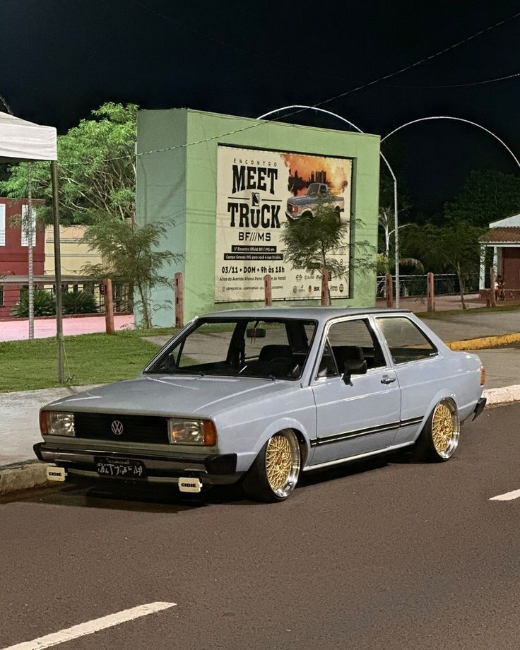

Voyage - Ano 1996
Valor: R$24,854
O Volkswagen Voyage 1996 é um dos modelos mais queridos da linha da VW, combinando o estilo compacto do sedã com a confiabilidade característica da marca. Com um design simples e eficiente, o Voyage 96 se destacou pela sua resistência, economia e bom desempenho, sendo uma excelente escolha para quem buscava um carro acessível e durável.
Pontos positivos
Economia: Baixo consumo de combustível e manutenção acessível.
Desempenho: Motor 1.8, bom desempenho para o uso urbano e viagens curtas.
Conforto: Interior funcional, com bom espaço para passageiros.
Durabilidade: Reconhecido pela resistência e longevidade, com peças fáceis de encontrar.
Design simples: Estilo sóbrio e funcional, apreciado por muitos.